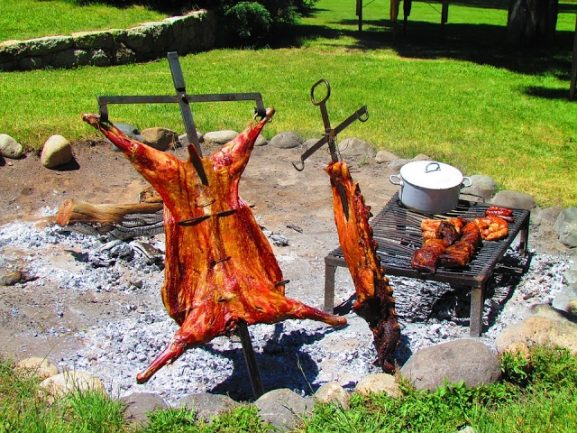

Receceta de chivito asado
No se trata solo de la simple naturaleza, sino de un saber culinario proveniente de los antepasados que datan de
las épocas coloniales.
Cada generación le ha aportado a la fórmula su propio toque, el cual la ha ido tornando
en el sabroso hito gastronómico que es hoy en día.
Sin más preámbulos pasemos a la receta de nuestro plato principal, que seguramente no durará mucho tiempo en la
mesa familiar.
Ingredientes
- Ajo cantidad necesaria.
- Aceite de oliva cantidad necesaria.
- Cabrito 1/2 (3kg) unidad.
- Sal, cantidad necesaria.
- Romero 100 gr.
Preparación
- Hacer una marinada con ajos, sal gruesa romero y abundante aceite de oliva.
- Aderezar de ambos lados y colocar en la parrilla del lado del hueso.
- Cocinar una hora y media.
- Dar vuelta, aderezar nuevamente y cocinar por una hora mas aproximadamente.
- Acompañar el chivito con tomates frescos cortados en octavos y condimentar con : sal, pimienta, aceite de
oliva, orégano y jugo de limón.
Imagen de chivito a la estaca

Video explicativo de asado
Mapa de referencia